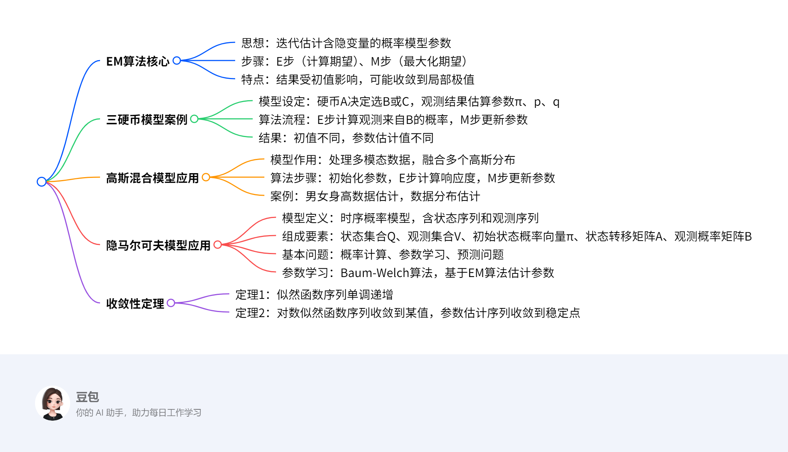

EM算法及其应用¶
总览¶
一段话总结¶
文档围绕EM算法（期望最大化算法）展开，介绍其核心思想为通过迭代估计含有隐变量的概率模型参数，包含E步（计算期望）和M步（最大化期望）。以三硬币模型为例说明算法流程，指出其结果受初值选择影响，可能收敛到局部极值。还介绍了EM算法在高斯混合模型（用于处理多模态数据）和隐马尔可夫模型（用于时序数据建模）中的应用，涉及模型定义、参数估计步骤及具体案例，最后提及算法的收敛性定理，强调其简单性与普适性，但无法保证全局最优。
思维导图¶
¶
详细总结¶
一、EM算法概述¶
核心思想：通过迭代估计含有隐变量的概率模型参数，解决无解析解的极大似然估计问题。
核心步骤：
1. E步（期望步）：利用当前参数估计值，计算隐变量的条件期望（如三硬币模型中观测来自某硬币的概率）。
2. M步（最大化步）：基于E步结果，最大化似然函数的下界，更新模型参数。
关键性质：
- 结果依赖初值选择，不同初值可能导致不同局部极值（如三硬币模型初值为(0.5,0.5,0.5)和(0.4,0.6,0.7)时结果不同）。
- 收敛性：似然函数序列单调递增，最终收敛到局部极值（定理1、定理2）。
二、三硬币模型案例¶
模型设定：
- 硬币A（正面概率π）决定选择硬币B（正面概率p）或C（正面概率q），观测结果为1/0序列（如1101001011），需估计π、p、q。
- 似然函数：\( P(Y|\theta) = \prod_{j=1}^{n} [\pi p^{y_j}(1-p)^{1-y_j} + (1-\pi) q^{y_j}(1-q)^{1-y_j}] \)，无解析解，需用EM算法。
算法流程：
1. 初始化：如\( \theta^{(0)}=(0.5,0.5,0.5) \)。
2. E步：计算观测\( y_j \)来自B的概率\( \mu_j^{(i+1)} = \frac{\pi^{(i)}p^{(i)^{y_j}}(1-p^{(i)})^{1-y_j}}{\pi^{(i)}p^{(i)^{y_j}}(1-p^{(i)})^{1-y_j} + (1-\pi^{(i)})q^{(i)^{y_j}}(1-q^{(i)})^{1-y_j}} \)。
3. M步：
- \( \pi^{(i+1)} = \frac{1}{n}\sum_{j=1}^{n}\mu_j^{(i+1)} \)
- \( p^{(i+1)} = \frac{\sum_{j=1}^{n}\mu_j^{(i+1)}y_j}{\sum_{j=1}^{n}\mu_j^{(i+1)}} \)
- \( q^{(i+1)} = \frac{\sum_{j=1}^{n}(1-\mu_j^{(i+1)})y_j}{\sum_{j=1}^{n}(1-\mu_j^{(i+1)})} \)
结果示例：
- 初值(0.5,0.5,0.5)时，迭代后\( \pi=0.5, p=0.6, q=0.6 \)；
- 初值(0.4,0.6,0.7)时，结果为\( \hat{\pi}=0.4064, \hat{p}=0.5368, \hat{q}=0.6432 \)。
三、高斯混合模型应用¶
模型作用：处理多模态数据，假设数据由K个高斯分布混合生成，每个分布权重为\( \alpha_k \)（\( \sum\alpha_k=1 \)）。
参数估计流程：
1. 初始化：设定各高斯分布的均值\( \mu_k \)、方差\( \sigma_k^2 \)和权重\( \alpha_k \)。
2. E步：计算观测数据\( y_j \)来自第k个分模型的响应度\( \hat{\gamma}_{jk} = \frac{\alpha_k \phi(y_j|\theta_k)}{\sum_{k=1}^{K}\alpha_k \phi(y_j|\theta_k)} \)。
3. M步：
- \( \hat{\mu}_k = \frac{\sum_{j=1}^{N}\hat{\gamma}_{jk}y_j}{\sum_{j=1}^{N}\hat{\gamma}_{jk}} \)
- \( \hat{\sigma}_k^2 = \frac{\sum_{j=1}^{N}\hat{\gamma}_{jk}(y_j-\mu_k)^2}{\sum_{j=1}^{N}\hat{\gamma}_{jk}} \)
- \( \hat{\alpha}_k = \frac{\sum_{j=1}^{N}\hat{\gamma}_{jk}}{N} \)
案例：
- 男女身高问题：200个未知性别身高数据，通过EM算法估计男女分布的均值、方差及样本归属概率。
四、隐马尔可夫模型（HMM）应用¶
模型定义：描述隐藏状态序列生成观测序列的过程，适用于时序数据。
组成要素：
| 要素 | 符号 | 含义 |
|--------------|--------------------|----------------------------------------------------------------------|
| 状态集合 | \( Q \) | 如{盒子1, 盒子2, 盒子3, 盒子4} |
| 观测集合 | \( V \) | 如{红球, 白球} |
| 初始状态概率 | \( \pi \) | 初始时刻各状态概率向量 |
| 状态转移矩阵 | \( A \) | \( a_{ij} \)为从状态i到j的转移概率 |
| 观测概率矩阵 | \( B \) | \( b_j(k) \)为状态j生成观测k的概率 |
参数学习（Baum-Welch算法）：
1. E步：计算状态序列的联合概率期望（如\( P(O, i_t=i, i_{t+1}=j|\bar{\lambda}) \)）。
2. M步：
- \( \pi_i = \frac{P(O, i_1=i|\bar{\lambda})}{P(O|\bar{\lambda})} \)
- \( a_{ij} = \frac{\sum_{t=1}^{T-1}P(O, i_t=i, i_{t+1}=j|\bar{\lambda})}{\sum_{t=1}^{T-1}P(O, i_t=i|\bar{\lambda})} \)
- \( b_j(k) = \frac{\sum_{t=1}^{T}P(O, i_t=j|\bar{\lambda})I(o_t=v_k)}{\sum_{t=1}^{T}P(O, i_t=j|\bar{\lambda})} \)
案例：
- 盒子和球模型：通过5次观测序列{红, 红, 白, 白, 红}，估计状态转移矩阵和观测概率矩阵。
五、收敛性定理¶
| 定理 | 内容 |
|---|---|
| 定理1 | 似然函数序列( P(Y |
| 定理2 | 对数似然函数序列收敛到某值\( L^* \)，参数估计序列收敛到\( L(\theta) \)的稳定点（可能为局部极值）。 |
关键问题¶
1. EM算法的核心步骤是什么？其数学本质如何理解？¶
答案：
EM算法核心步骤为E步（计算期望）和M步（最大化期望）。
- E步：利用当前参数\( \theta^{(i)} \)计算隐变量Z的条件期望，即Q函数\( Q(\theta, \theta^{(i)}) = E_{Z}[logP(Y,Z|\theta)|Y,\theta^{(i)}] \)。
- M步：最大化Q函数以更新参数\( \theta^{(i+1)} = \arg\max_\theta Q(\theta, \theta^{(i)}) \)。
数学本质：通过Jensen不等式构造对数似然函数\( L(\theta) \)的下界\( B(\theta, \theta^{(i)}) \)，迭代逼近其极大值，每次迭代保证似然函数非递减。
2. 为什么EM算法的结果依赖初值选择？如何缓解这一问题？¶
答案：
- 原因：EM算法收敛到对数似然函数的局部极值，初值不同可能导致陷入不同局部解（如三硬币模型中不同初值得到不同参数估计）。
- 缓解方法：
1. 选取多个不同初值进行迭代，比较结果并选择最优解；
2. 结合先验知识或数据特征，为初值提供合理猜测（如高斯混合模型中根据数据分布初始化均值）。
3. 高斯混合模型与隐马尔可夫模型在应用场景上的核心区别是什么？¶
答案：
| 模型 | 应用场景 | 核心区别 |
|--------------------|--------------------------------------------------------------------------|--------------------------------------------------------------------------|
| 高斯混合模型 | 处理无序列的多模态数据（如人群身高、样本聚类）。 | 假设数据由多个独立高斯分布混合生成，无时间序列依赖，侧重静态数据的簇划分。 |
| 隐马尔可夫模型 | 建模时序数据（如语音识别、天气预测、生物序列分析）。 | 引入状态转移和观测生成的时序依赖，状态序列隐含动态变化规律，侧重序列生成过程。 |
EM算法及三硬币模型应用总结¶
一、EM算法核心理论¶
1. 算法定义与核心思想¶
- 定义：EM算法（期望最大化算法）是一种通过迭代估计含有隐变量的概率模型参数的方法，适用于无解析解的极大似然估计问题。
- 核心思想：通过E步（期望步）和M步（最大化步）交替迭代，逐步逼近对数似然函数的极大值。
2. 算法流程¶
- 初始化参数：选取初始值\(\theta^{(0)}=(\pi^{(0)}, p^{(0)}, q^{(0)})\)。
- E步（计算期望）：
- 利用当前参数\(\theta^{(i)}\)，计算隐变量\(Z\)的条件期望（即观测数据来自某模型的概率）。
- 三硬币模型E步公式：
[ \mu_j^{(i+1)} = \frac{\pi^{(i)} (p{(i)}) (1-p{(i)}) (p}}{\pi^{(i){(i)}) (1-p{(i)})) (q} + (1-\pi^{(i){(i)}) (1-q{(i)}) ]}
其中\(\mu_j^{(i+1)}\)表示第\(j\)次观测来自硬币B的概率。 - M步（最大化期望）：
- 基于E步结果更新参数，最大化似然函数下界。
- 三硬币模型M步公式：
[ \pi^{(i+1)} = \frac{1}{n} \sum_{j=1}^n \mu_j^{(i+1)}, \quad p^{(i+1)} = \frac{\sum_{j=1}^n \mu_j^{(i+1)} y_j}{\sum_{j=1}^n \mu_j^{(i+1)}}, \quad q^{(i+1)} = \frac{\sum_{j=1}^n (1-\mu_j^{(i+1)}) y_j}{\sum_{j=1}^n (1-\mu_j^{(i+1)})} ] - 迭代终止条件：当参数变化量小于阈值（如\(\|\theta^{(i+1)}-\theta^{(i)}\| < \varepsilon\)）或似然函数增长停滞时停止。
3. 关键性质¶
- 初值敏感性：不同初值可能导致不同局部极值（如三硬币模型中初值\((0.5,0.5,0.5)\)和\((0.4,0.6,0.7)\)得到不同结果）。
- 收敛性：似然函数序列单调递增，最终收敛到局部极值（非全局最优）。
二、三硬币模型问题与求解¶
1. 问题描述¶
- 模型设定：
- 硬币A（正面概率\(\pi\)）决定选择硬币B（正面概率\(p\)）或C（正面概率\(q\)）。
- 观测结果为二进制序列（如\(Y = [1,1,0,1,0,0,1,0,1,1]\)），需估计参数\(\pi, p, q\)。
- 难点：隐变量\(Z\)（硬币A的结果）不可观测，似然函数含求和项，无解析解。
2. 求解方法：EM算法¶
步骤解析：
1. 初始化参数：
- 例：取初值\(\theta^{(0)} = (0.5, 0.5, 0.5)\)（硬币A、B、C均为均匀硬币）。
2. 第一次迭代（\(i=0\)）：
- E步：计算每个观测\(y_j\)来自硬币B的概率\(\mu_j^{(1)}\)。
- 对于\(y_j=1\)：
[
\mu_j^{(1)} = \frac{0.5 \times 0.5^1 \times 0.5^0}{0.5 \times 0.5 + 0.5 \times 0.5} = 0.5
]
- 对于\(y_j=0\)：
[
\mu_j^{(1)} = \frac{0.5 \times 0.5^0 \times 0.5^1}{0.5 \times 0.5 + 0.5 \times 0.5} = 0.5
]
- M步：
- 计算\(\pi^{(1)}\)：\(\pi^{(1)} = \frac{1}{10} \times (0.5 \times 10) = 0.5\)
- 计算\(p^{(1)}\)：观测中1的个数为6，0的个数为4，
[
p^{(1)} = \frac{0.5 \times 6}{0.5 \times 10} = 0.6
]
- 计算\(q^{(1)}\)：
[
q^{(1)} = \frac{(1-0.5) \times 6}{(1-0.5) \times 10} = 0.6
]
3. 第二次迭代（\(i=1\)）：
- E步：参数更新为\(\theta^{(1)}=(0.5, 0.6, 0.6)\)，重新计算\(\mu_j^{(2)}\)。
- 对于\(y_j=1\)：
[
\mu_j^{(2)} = \frac{0.5 \times 0.6^1 \times 0.4^0}{0.5 \times 0.6 + 0.5 \times 0.6} = 0.5
]
- 对于\(y_j=0\)：
[
\mu_j^{(2)} = \frac{0.5 \times 0.4^1 \times 0.6^0}{0.5 \times 0.4 + 0.5 \times 0.4} = 0.5
]
- M步：参数不变，迭代收敛，结果为\(\pi=0.5, p=0.6, q=0.6\)。
3. 初值影响示例¶
- 初值\(\theta^{(0)}=(0.4, 0.6, 0.7)\)：
- 经过迭代后，参数估计为\(\hat{\pi}=0.4064, \hat{p}=0.5368, \hat{q}=0.6432\)。
- 结论：初值不同导致最终参数不同，需通过多次初始化选取最优解。
三、EM算法数学推导要点¶
1. 目标函数与难点¶
- 不完全数据对数似然函数：
[ L(\theta) = \log P(Y|\theta) = \log \sum_Z P(Y,Z|\theta) ]
难点：求和项的对数无法直接求导，需通过不等式放缩构造下界。
2. Jensen不等式的应用¶
- 核心推导：
[ L(\theta) - L(\theta^{(i)}) \geq \sum_Z P(Z|Y,\theta^{(i)}) \log \frac{P(Y,Z|\theta)}{P(Y,Z|\theta^{(i)})} ]
定义下界函数\(B(\theta, \theta^{(i)})\)，通过最大化\(B\)间接优化\(L(\theta)\)。
3. Q函数的作用¶
- 定义：
[ Q(\theta, \theta^{(i)}) = E_Z[\log P(Y,Z|\theta) | Y, \theta^{(i)}] ] - 本质：完全数据对数似然函数在当前参数下的期望，作为\(L(\theta)\)的逼近目标。
- M步等价于：\(\theta^{(i+1)} = \arg\max_\theta Q(\theta, \theta^{(i)})\)。
四、总结¶
- EM算法优势：适用于含隐变量的复杂模型，通过迭代逐步优化参数。
- 局限性：依赖初值，易收敛到局部极值，需结合实际问题多次初始化。
- 应用场景：机器学习（如高斯混合模型、隐马尔可夫模型）、统计推断等。
EM算法收敛性分析总结¶
一、核心问题与结论¶
1. 核心疑问¶
- EM算法的估计序列是否收敛？
- 若收敛，收敛到全局极大值还是局部极大值？
2. 关键结论¶
- 收敛性：EM算法生成的似然函数序列必定收敛（单调递增且有上界），但参数估计序列未必一定收敛（可能振荡或收敛到稳定点）。
- 极值性质：即使参数收敛，也只能保证收敛到对数似然函数的稳定点（可能是局部极大值、鞍点甚至局部极小值），无法保证全局极大值。
二、收敛性定理详解¶
1. 定理1：似然函数序列的单调性¶
- 内容：设 \( P(Y|\theta) \) 为观测数据的似然函数，\( \{\theta^{(i)}\} \) 为EM算法的参数序列，对应似然函数序列 \( \{P(Y|\theta^{(i)})\} \) 单调递增，即：
[ P(Y|\theta^{(i+1)}) \geq P(Y|\theta^{(i)}) ] - 证明要点：
- 利用Jensen不等式构造似然函数差的下界，证明每次迭代后似然函数非递减。
- 数学表达式：通过 \( H(\theta, \theta^{(i)}) = \sum_Z \log P(Z|Y,\theta) P(Z|Y,\theta^{(i)}) \) 推导，结合不等式 \( \sum_Z \log \frac{P_1}{P_2} \cdot P_2 \leq \log \sum_Z P_1 \)（其中 \( P_1, P_2 \) 为概率分布），得出 \( H(\theta^{(i+1)}, \theta^{(i)}) \leq H(\theta^{(i)}, \theta^{(i)}) \)，从而证明似然函数单调递增。
2. 定理2：对数似然函数与参数的收敛性¶
- 内容：
- 若 \( P(Y|\theta) \) 有上界，则对数似然函数序列 \( L(\theta^{(i)}) = \log P(Y|\theta^{(i)}) \) 收敛到某一值 \( L^* \)。
- 在 \( Q(\theta, \theta') \) 与 \( L(\theta) \) 满足一定条件下，参数序列 \( \{\theta^{(i)}\} \) 收敛到 \( L(\theta) \) 的稳定点（一阶导数为0的点）。
- 说明：
- 稳定点：可能是局部极大值、鞍点或局部极小值（实际应用中多为局部极大值）。
- 条件：定理2的条件在大多数实际问题中（如连续可微的概率模型）成立。
三、收敛性的局限性与应对方法¶
1. 局限性¶
- 参数收敛的不确定性：似然函数收敛不保证参数收敛（可能出现参数振荡但似然函数稳定的情况）。
- 初值敏感性：不同初值可能导致参数收敛到不同稳定点（如三硬币模型中初值影响最终参数）。
2. 应对方法¶
- 多初值迭代：
- 方法：选取多个不同初值运行EM算法，比较最终似然函数值，选择最优解。
- 例子：在三硬币模型中，分别用初值 \( (0.5, 0.5, 0.5) \) 和 \( (0.4, 0.6, 0.7) \) 迭代，前者收敛到 \( (\pi=0.5, p=0.6, q=0.6) \)，后者收敛到 \( (\pi=0.4064, p=0.5368, q=0.6432) \)，通过比较似然函数值确定更优解。
- 结合先验知识：
- 方法：利用领域知识为初值提供合理范围（如高斯混合模型中根据数据分布初始化均值）。
- 改进算法：
- 方法：结合全局优化算法（如模拟退火、遗传算法）寻找初值，或使用梯度下降等方法辅助EM算法逃离局部极值。
四、实例解析：三硬币模型的收敛性验证¶
1. 问题回顾¶
- 三硬币模型通过EM算法估计参数 \( \pi, p, q \)，观测序列为 \( Y = [1,1,0,1,0,0,1,0,1,1] \)（共10次观测，6次1，4次0）。
2. 收敛性验证步骤¶
- 初值1：对称初值 \( (0.5, 0.5, 0.5) \)
- 迭代过程：
- 第1次迭代后参数：\( (0.5, 0.6, 0.6) \)
- 第2次迭代后参数不变，似然函数收敛。
- 结论：参数收敛到局部极大值，似然函数单调递增。
- 初值2：非对称初值 \( (0.4, 0.6, 0.7) \)
- 迭代过程：
- 经过多次迭代后参数收敛到 \( (0.4064, 0.5368, 0.6432) \)，似然函数仍单调递增但值低于初值1的结果。
- 结论：参数收敛到另一局部极大值，说明初值影响收敛结果。
3. 关键观察¶
- 无论初值如何，似然函数序列始终单调递增，但参数可能收敛到不同局部极值，印证了EM算法的收敛性定理。
五、总结¶
| 要点 | 详细说明 |
|---|---|
| 收敛性保证 | 似然函数序列必收敛（定理1），参数序列可能收敛（定理2条件满足时）。 |
| 极值性质 | 收敛到对数似然函数的稳定点（通常为局部极大值），非全局最优。 |
| 应对策略 | 多初值迭代、结合先验知识、改进优化算法。 |
| 应用启示 | 在实际应用中需通过实验验证结果的鲁棒性，避免依赖单一初值导致的局部最优解。 |
EM算法在高斯混合模型中的应用总结¶
一、高斯混合模型（GMM）基础¶
1. 模型定义与作用¶
- 定义：高斯混合模型是由多个高斯分布线性组合而成的概率模型，用于描述多模态数据（即数据呈现多个密集簇状分布）。
- 数学表达式：
[ P(y|\theta) = \sum_{k=1}^{K} \alpha_k \phi(y|\theta_k), \quad \text{其中} \alpha_k \geq 0, \sum_{k=1}^{K} \alpha_k = 1 ] - \( \alpha_k \)：第\( k \)个高斯分模型的权重（选择概率）；
- \( \phi(y|\theta_k) \)：第\( k \)个高斯分模型的概率密度函数，参数\( \theta_k = (\mu_k, \sigma_k^2) \)。
2. 应用场景¶
- 核心问题：当单高斯模型无法拟合多模态数据时（如男女身高混合数据、多类别样本聚类），需用GMM建模。
- 与单高斯模型的对比：
- 单高斯模型假设数据来自单一分布，对多模态数据拟合差（如数据分布呈双峰值时，单高斯模型的中心区域样本量少，拟合不合理）。
- GMM通过多个高斯分布的加权和，灵活拟合复杂数据分布。
二、高斯混合模型的参数估计：EM算法¶
1. 问题难点¶
- 隐变量存在：每个观测数据\( y_j \)的来源分模型未知（即隐变量\( \gamma_{jk} \)：\( \gamma_{jk}=1 \)表示\( y_j \)来自第\( k \)个分模型）。
- 直接求解不可行：对数似然函数含求和项的对数，无法通过直接求导得到解析解，需用EM算法迭代求解。
2. EM算法流程¶
步骤1：初始化参数
- 设定分模型个数\( K \)，初始化各分模型的参数\( \theta_k^{(0)}=(\mu_k^{(0)}, \sigma_k^{2(0)}) \)和权重\( \alpha_k^{(0)} \)（如随机初始化或基于先验知识）。
步骤2：E步（计算响应度）
- 目标：计算每个观测数据\( y_j \)来自第\( k \)个分模型的概率（响应度，Responsibility）。
- 公式：
[
\hat{\gamma}{jk} = P(\gamma \phi(y_j|\theta_k}=1 | y_j, \theta^{(i)}) = \frac{\alpha_k^{(i){(i)})}{\sum_{m=1}
]} \alpha_m^{(i)} \phi(y_j|\theta_m^{(i)})
- \( \phi(y_j|\theta_k^{(i)}) = \frac{1}{\sqrt{2\pi\sigma_k^{2(i)}}} \exp\left(-\frac{(y_j-\mu_k^{(i)})^2}{2\sigma_k^{2(i)}}\right) \)为高斯概率密度。
步骤3：M步（更新模型参数）
- 目标：基于响应度更新分模型参数和权重，最大化似然函数下界。
- 更新公式：
1. 均值：\( \mu_k^{(i+1)} = \frac{\sum_{j=1}^{N} \hat{\gamma}_{jk} y_j}{\sum_{j=1}^{N} \hat{\gamma}_{jk}} \)
2. 方差：\( \sigma_k^{2(i+1)} = \frac{\sum_{j=1}^{N} \hat{\gamma}_{jk} (y_j - \mu_k^{(i+1)})^2}{\sum_{j=1}^{N} \hat{\gamma}_{jk}} \)
3. 权重：\( \alpha_k^{(i+1)} = \frac{\sum_{j=1}^{N} \hat{\gamma}_{jk}}{N} \)
步骤4：迭代终止
- 当参数变化量小于阈值（如\( \|\theta^{(i+1)} - \theta^{(i)}\| < \varepsilon \)）或响应度变化极小时，停止迭代。
三、实例解析：男女身高数据建模¶
1. 问题描述¶
- 数据：200个未知性别的身高数据（假设来自男生和女生两个高斯分布）。
- 目标：
- 估计男生、女生身高分布的参数（均值\( \mu_1, \mu_2 \)，方差\( \sigma_1^2, \sigma_2^2 \)）；
- 确定每个样本属于男生或女生的概率。
2. 求解步骤¶
Step 1：初始化参数
- 设\( K=2 \)（男生、女生两个分模型），初始化：
- 男生分布：\( \mu_1^{(0)}=1.64 \, \text{m}, \sigma_1^{2(0)}=0.06 \, \text{m}^2 \)（假设均值为1.64，方差较小）；
- 女生分布：\( \mu_2^{(0)}=1.56 \, \text{m}, \sigma_2^{2(0)}=0.04 \, \text{m}^2 \)；
- 权重：\( \alpha_1^{(0)}=\alpha_2^{(0)}=0.5 \)（假设男女样本数相等）。
Step 2：E步计算响应度
- 对每个身高数据\( y_j \)，计算其属于男生的概率\( \hat{\gamma}_{j1} \)和女生的概率\( \hat{\gamma}_{j2}=1-\hat{\gamma}_{j1} \)。
- 例：某样本\( y_j=1.70 \, \text{m} \)，
[
\hat{\gamma}_{j1} = \frac{0.5 \cdot \phi(1.70|1.64, 0.06)}{0.5 \cdot \phi(1.70|1.64, 0.06) + 0.5 \cdot \phi(1.70|1.56, 0.04)}
]
计算得\( \hat{\gamma}_{j1} \approx 0.8 \)，即该样本有80%概率属于男生分布。
Step 3：M步更新参数
- 男生分布参数更新：
- 均值：\( \mu_1^{(1)} = \frac{\sum_{j=1}^{200} \hat{\gamma}_{j1} y_j}{\sum_{j=1}^{200} \hat{\gamma}_{j1}} \)（加权平均，高响应度样本贡献更大）；
- 方差：\( \sigma_1^{2(1)} = \frac{\sum_{j=1}^{200} \hat{\gamma}_{j1} (y_j - \mu_1^{(1)})^2}{\sum_{j=1}^{200} \hat{\gamma}_{j1}} \)；
- 权重：\( \alpha_1^{(1)} = \frac{\sum_{j=1}^{200} \hat{\gamma}_{j1}}{200} \)（若多数样本响应度高，则权重增大）。
- 女生分布参数更新：同理，使用\( \hat{\gamma}_{j2} \)计算。
Step 4：迭代直至收敛
- 重复E步和M步，直至男生、女生分布的参数不再显著变化（如均值变化小于0.01 m，方差变化小于0.001 m²）。
3. 结果解释¶
- 最终得到男生分布参数（如\( \mu_1=1.75 \, \text{m}, \sigma_1^2=0.05 \)）和女生分布参数（如\( \mu_2=1.60 \, \text{m}, \sigma_2^2=0.03 \)），以及每个样本的归属概率。
- 权重\( \alpha_1, \alpha_2 \)反映男女样本比例（如\( \alpha_1=0.52, \alpha_2=0.48 \)，接近实际比例1:1）。
四、高斯混合模型与K-means的对比¶
| 对比维度 | 高斯混合模型（EM算法） | K-means聚类 |
|---|---|---|
| 模型性质 | 概率生成模型，输出样本属于各簇的概率 | 非概率模型，输出硬聚类（样本仅属一个簇） |
| 核心目标 | 最大化数据似然函数，拟合分布参数 | 最小化簇内距离平方和（SSD） |
| 输出结果 | 簇分布参数、样本软归属（概率） | 簇质心、样本硬归属（类别标签） |
| 适用场景 | 密度估计、生成式建模（如异常检测） | 无监督分类、数据分组 |
五、总结¶
1. 核心价值¶
- 高斯混合模型通过EM算法实现多模态数据的柔性建模，解决了单高斯模型的局限性。
- EM算法通过迭代估计隐变量（样本归属概率）和模型参数，是处理含隐变量问题的通用框架。
2. 关键要点¶
- 响应度：E步计算的样本归属概率是连接隐变量与观测数据的桥梁。
- 初值影响：需通过多组初值迭代避免局部最优（如男女身高案例中不同初值可能导致簇划分偏差）。
- 扩展应用：GMM可推广至多维数据（如二维平面数据聚类），或与其他模型结合（如HMM中的观测概率建模）。
EM算法在隐马尔可夫模型中的应用总结¶
一、隐马尔可夫模型（HMM）基础¶
1. 模型定义与核心要素¶
- 定义：隐马尔可夫模型是描述时序数据中隐藏状态与观测序列关系的概率模型，由隐藏状态序列生成观测序列，适用于语音识别、生物序列分析等场景。
- 核心要素（三要素）：
- 状态集合 \( Q \)：所有可能的隐藏状态（如盒子和球模型中的{盒子1, 盒子2, 盒子3, 盒子4}）。
- 观测集合 \( V \)：所有可能的观测值（如{红球, 白球}）。
- 参数组 \( \lambda = (A, B, \pi) \)：
- 初始状态概率向量 \( \pi \)：\( \pi_i = P(i_1 = q_i) \)，即初始时刻处于状态 \( q_i \) 的概率。
- 状态转移矩阵 \( A \)：\( a_{ij} = P(i_{t+1}=q_j | i_t=q_i) \)，表示状态转移概率。
- 观测概率矩阵 \( B \)：\( b_j(k) = P(o_t=v_k | i_t=q_j) \)，表示状态生成观测的概率。
2. 基本假设¶
- 齐次马尔可夫性假设：当前状态仅依赖前一状态，即 \( P(i_t | i_{t-1}, o_{t-1}, \dots) = P(i_t | i_{t-1}) \)。
- 观测独立性假设：当前观测仅依赖当前状态，即 \( P(o_t | i_t, i_{t-1}, \dots) = P(o_t | i_t) \)。
二、隐马尔可夫模型的三个基本问题¶
| 问题类型 | 输入 | 输出/目标 | 求解方法 |
|---|---|---|---|
| 1. 概率计算 | \( \lambda, O \) | ( P(O | \lambda) ) |
| 2. 参数学习 | \( O \)（无状态序列） | \( \lambda = (A, B, \pi) \) 使 ( P(O | \lambda) ) 最大 |
| 3. 预测（解码） | \( \lambda, O \) | 最可能的状态序列 \( I \) | Viterbi算法 |
三、参数学习问题：Baum-Welch算法（EM算法应用）¶
1. 问题难点¶
- 隐变量存在：状态序列 \( I \) 不可观测，需通过EM算法迭代估计参数 \( \lambda = (A, B, \pi) \)。
- 目标函数：最大化观测数据的对数似然函数 \( L(\lambda) = \log P(O | \lambda) = \log \sum_I P(O, I | \lambda) \)，其中求和涉及所有可能的状态序列 \( I \)，无法直接求解。
2. Baum-Welch算法流程（EM框架）¶
步骤1：明确完全数据与隐变量
- 完全数据：\( (O, I) \)（观测序列+状态序列）。
- 对数似然函数：\( \log P(O, I | \lambda) = \log \left[ \pi_{i_1} \prod_{t=1}^{T-1} a_{i_t i_{t+1}} \prod_{t=1}^T b_{i_t}(o_t) \right] \)。
步骤2：E步（计算Q函数）
- Q函数定义：
[
Q(\lambda, \bar{\lambda}) = E_I \left[ \log P(O, I | \lambda) \mid O, \bar{\lambda} \right] = \sum_I \log P(O, I | \lambda) \cdot P(I \mid O, \bar{\lambda})
]
- 其中 \( P(I \mid O, \bar{\lambda}) \) 是在当前参数 \( \bar{\lambda} \) 下，状态序列 \( I \) 的后验概率。
步骤3：M步（最大化Q函数更新参数）
通过拉格朗日乘子法，分别对 \( \pi, A, B \) 求偏导并最大化，得到更新公式：
1. 初始状态概率 \( \pi_i \)：
[
\pi_i = \frac{P(i_1 = q_i \mid O, \bar{\lambda})}{P(O \mid \bar{\lambda})} = P(i_1 = q_i \mid O, \bar{\lambda})
]
2. 状态转移矩阵 \( a_{ij} \)：
[
a_{ij} = \frac{\sum_{t=1}^{T-1} P(i_t = q_i, i_{t+1} = q_j \mid O, \bar{\lambda})}{\sum_{t=1}^{T-1} P(i_t = q_i \mid O, \bar{\lambda})}
]
3. 观测概率矩阵 \( b_j(k) \)：
[
b_j(k) = \frac{\sum_{t=1}^T P(i_t = q_j \mid O, \bar{\lambda}) \cdot \delta(o_t, v_k)}{\sum_{t=1}^T P(i_t = q_j \mid O, \bar{\lambda})}
]
- \( \delta(o_t, v_k) = 1 \) 当 \( o_t = v_k \)，否则为0。
步骤4：迭代终止
重复E步和M步，直至参数变化量小于阈值或对数似然函数收敛。
四、实例解析：盒子和球模型参数学习¶
1. 问题描述¶
- 模型设定：
- 状态集合 \( Q = \{\text{盒子1}, \text{盒子2}, \text{盒子3}, \text{盒子4}\} \)，观测集合 \( V = \{\text{红球}, \text{白球}\} \)。
- 观测序列 \( O = \{\text{红}, \text{红}, \text{白}, \text{白}, \text{红}\} \)（\( T = 5 \)）。
- 目标：利用Baum-Welch算法估计参数 \( \lambda = (A, B, \pi) \)。
2. 求解步骤（简化版）¶
Step 1：初始化参数
- 假设初始参数：
- \( \pi = (0.25, 0.25, 0.25, 0.25) \)（均匀分布），
- 状态转移矩阵 \( A \) 和观测矩阵 \( B \) 随机初始化（如盒子1→盒子2的概率为1，其他转移均匀分布；观测概率均匀为0.5）。
Step 2：E步计算后验概率
- 计算状态序列 \( I \) 的后验概率 \( P(I \mid O, \bar{\lambda}) \)，需通过前向-后向算法计算中间量：
- 前向变量 \( \alpha_t(i) = P(o_1, o_2, \dots, o_t, i_t = q_i \mid \bar{\lambda}) \)，
- 后向变量 \( \beta_t(i) = P(o_{t+1}, \dots, o_T \mid i_t = q_i, \bar{\lambda}) \)。
- 利用前向-后向变量计算：
- \( P(i_t = q_i \mid O, \bar{\lambda}) = \frac{\alpha_t(i) \beta_t(i)}{P(O \mid \bar{\lambda})} \)，
- \( P(i_t = q_i, i_{t+1} = q_j \mid O, \bar{\lambda}) = \frac{\alpha_t(i) a_{ij} b_j(o_{t+1}) \beta_{t+1}(j)}{P(O \mid \bar{\lambda})} \)。
Step 3：M步更新参数
- 更新 \( \pi \)：
[
\pi_i = P(i_1 = q_i \mid O, \bar{\lambda}) = \frac{\alpha_1(i)}{P(O \mid \bar{\lambda})}
]
- 更新 \( a_{ij} \)：
以盒子1→盒子2为例，
[
a_{12} = \frac{\sum_{t=1}^{4} P(i_t=\text{盒子1}, i_{t+1}=\text{盒子2} \mid O, \bar{\lambda})}{\sum_{t=1}^{4} P(i_t=\text{盒子1} \mid O, \bar{\lambda})}
]
- 更新 \( b_j(\text{红球}) \)：
以盒子2为例，
[
b_2(\text{红球}) = \frac{\sum_{t=1}^5 P(i_t=\text{盒子2} \mid O, \bar{\lambda}) \cdot \delta(o_t, \text{红球})}{\sum_{t=1}^5 P(i_t=\text{盒子2} \mid O, \bar{\lambda})}
]
Step 4：迭代优化
重复E步和M步，直至参数稳定。例如，若观测中前两帧为红球，后两帧为白球，最后一帧为红球，迭代后盒子2和盒子3的观测概率可能分别偏向红球和白球，状态转移矩阵更符合“盒子2/3以0.4左、0.6右转移”的规则。
五、总结¶
1. 核心思想¶
- Baum-Welch算法是EM算法在隐马尔可夫模型中的具体应用，通过E步计算状态序列的后验期望，M步最大化期望似然，迭代估计不可观测的状态转移和观测概率。
2. 关键公式¶
| 参数 | 更新公式 |
|---|---|
| \( \pi_i \) | \( \pi_i = P(i_1 = q_i \mid O, \bar{\lambda}) \) |
| \( a_{ij} \) | \( a_{ij} = \frac{\text{状态i转移到j的期望次数}}{\text{状态i的期望停留次数}} \) |
| \( b_j(k) \) | \( b_j(k) = \frac{\text{状态j生成观测k的期望次数}}{\text{状态j的期望停留次数}} \) |
3. 应用场景¶
- 语音识别（状态为音素，观测为声学特征）、自然语言处理（词性标注）、生物信息学（DNA序列建模）等时序数据建模任务。